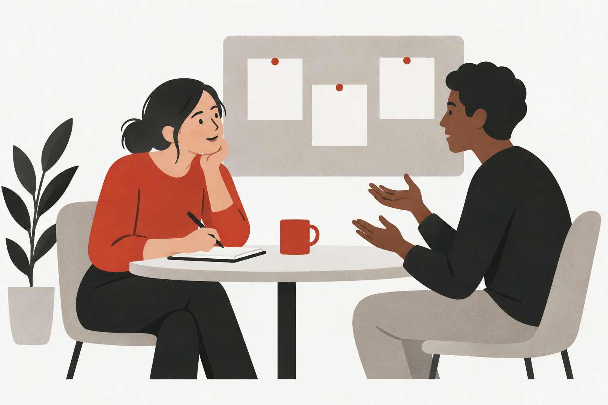

Nestlé / Project overview
Learning Platform Research
User research into an internal learning platform and the employee learning experience.
Explore projectUX Research · UX Design · Service Design
I’m Tommy, a researcher and designer at Nestlé. I turn user insights into better digital experiences, services and ways of working across a global organisation.
Explore my workCross-company research experience
At Nestlé, I have contributed to research initiatives involving Microsoft, SAP and IBM.
01 / Selected projects
Explore my work across user research, design, service design adoption and product management in an enterprise context.

Nestlé / Project overview
User research into an internal learning platform and the employee learning experience.
Explore projectNestlé / Project overview
Researching the employee experience of hardware devices used at work.
Explore projectNestlé / Project overview
User research focused on the adoption of internal AI agents.
Explore project
Nestlé / Project overview
Taking a service design perspective on the end-to-end product offering flow.
Explore projectNestlé / Project overview
Exploring the complete meeting experience through a service design lens.
Explore projectNestlé / Project overview
Looking at task management as an end-to-end employee service experience.
Explore projectNestlé / Project overview
Service design work on internal agents that support organisational functions.
Explore project
Nestlé / Project overview
Facilitating workshops and training, developing learning content and monitoring AI adoption.
Explore projectNestlé / Project overview
Product management work focused on implementing an internal product.
Explore projectIllustrations are conceptual. Internal interfaces, identifiable participants and company data are not shown.
02 / Research practice
Resources and validated AI automation I develop to support research teams and their workflows.
I design research resources that teams can use across their work, including research intake roadmaps, playbooks, UX methods and report templates.
I develop and validate AI-assisted automation for research workflows, including functional agents for internal research teams.
03 / About me
I work where people’s needs meet the realities of large organisations.
At Nestlé’s Global IT UX team, my focus is the digital employee experience: how people use tools, navigate services and adopt new ways of working. My work spans research, stakeholder recommendations and practical adoption support.
My background in interaction design and product-service systems helps me move between individual interactions and the wider service. Studying and working across China, Canada and Italy has shaped how I listen, collaborate and approach unfamiliar contexts.
Explore my CV04 / Research & writing
Exploring how service design works within organisations and public systems.
Service design · Organisational change
Public innovation · Citizen autonomy